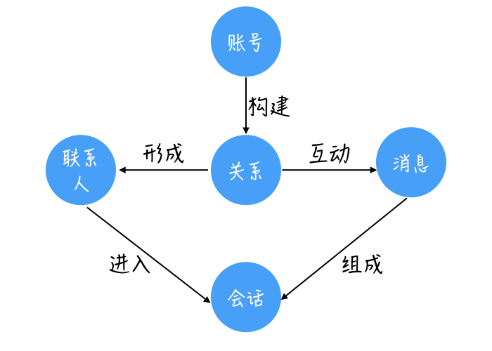
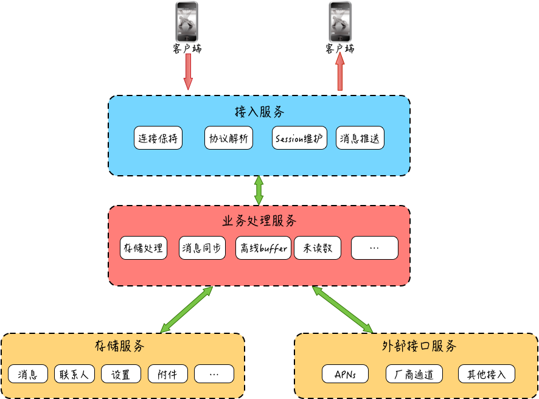

- 00 开篇词 搞懂“实时交互”的IM技术，将会有什么新机遇？.md.html
- 01 架构与特性：一个完整的IM系统是怎样的？.md.html
- 02 消息收发架构：为你的App，加上实时通信功能.md.html
- 03 轮询与长连接：如何解决消息的实时到达问题？.md.html
- 04 ACK机制：如何保证消息的可靠投递？.md.html
- 05 消息序号生成器：如何保证你的消息不会乱序？.md.html
- 06 HttpDNS和TLS：你的消息聊天真的安全吗？.md.html
- 07 分布式锁和原子性：你看到的未读消息提醒是真的吗？.md.html
- 08 智能心跳机制：解决网络的不确定性.md.html
- 09 分布式一致性：让你的消息支持多终端漫游.md.html
- 10 自动智能扩缩容：直播互动场景中峰值流量的应对.md.html
- 11 期中实战：动手写一个简易版的IM系统.md.html
- 12 服务高可用：保证核心链路稳定性的流控和熔断机制.md.html
- 13 HTTP Tunnel：复杂网络下消息通道高可用设计的思考.md.html
- 14 分片上传：如何让你的图片、音视频消息发送得更快？.md.html
- 15 CDN加速：如何让你的图片、视频、语音消息浏览播放不卡？.md.html
- 16 APNs：聊一聊第三方系统级消息通道的事.md.html
- 17 Cache：多级缓存架构在消息系统中的应用.md.html
- 18 Docker容器化：说一说IM系统中模块水平扩展的实现.md.html
- 19 端到端Trace：消息收发链路的监控体系搭建.md.html
- 20 存储和并发：万人群聊系统设计中的几个难点.md.html
- 21 期末实战：为你的简约版IM系统，加上功能.md.html
- 22 答疑解惑：不同即时消息场景下架构实现上的异同.md.html
- 结束语 真正的高贵，不是优于别人，而是优于过去的自己.md.html
- 捐赠
01 架构与特性：一个完整的IM系统是怎样的？
你好，我是袁武林。在接下来的一段时间里，我将和你一起探索IM的相关知识。今天是第一节课，我们就先从IM的相关概念开始着手。
说起IM，我估计你会先愣一下，“IM是QQ或者微信这样的即时聊天系统吗？它是不是很庞大，也很复杂？”
今天我们以一个简单的App聊天系统为例，来看下一个简单的聊天系统都有哪些构成要素，以此来了解一个完整的IM系统是什么样的。
从一个简单的聊天系统说起
我们可以从使用者和开发者两个角度来看一下。
1. 使用者眼中的聊天系统
如果我们站在一个使用者的角度从直观体验上来看，一个简单的聊天系统大概由以下元素组成：用户账号、账号关系、联系人列表、消息、聊天会话。我在这里画了一个简单的示意图：

这个应该不难理解，我来解释一下。
- 聊天的参与需要用户，所以需要有一个用户账号，用来给用户提供唯一标识，以及头像、昵称等可供设置的选项。
- 账号和账号之间通过某些方式（比如加好友、互粉等）构成账号间的关系链。
- 你的好友列表或者聊天对象的列表，我们称为联系人的列表，其中你可以选择一个联系人进行聊天互动等操作。
- 在聊天互动这个环节产生了消息。
- 同时你和对方之间的聊天消息记录就组成了一个聊天会话，在会话里能看到你们之间所有的互动消息。
2. 开发者眼中的聊天系统
从一个IM系统开发者的角度看，聊天系统大概由这几大部分组成：客户端、接入服务、业务处理服务、存储服务和外部接口服务。
下面，我大概讲一讲每一个部分主要的职责。

首先是客户端。客户端一般是用户用于收发消息的终端设备，内置的客户端程序和服务端进行网络通信，用来承载用户的互动请求和消息接收功能。我们可以把客户端想象为邮局业务的前台，它负责把你的信收走，放到传输管道中。
其次是接入服务。接入服务可以认为是服务端的门户，为客户端提供消息收发的出入口。发送的消息先由客户端通过网络给到接入服务，然后再由接入服务递交到业务层进行处理。
接入服务主要有四块功能：连接保持、协议解析、Session维护和消息推送。
我们可以把接入服务想象成一个信件管道，联通了邮局的前台和信件分拨中心。但是实际上，接入服务的作用很大，不仅仅只有保持连接和消息传递功能。
当服务端有消息需要推送给客户端时，也是将经过业务层处理的消息先递交给接入层，再由接入层通过网络发送到客户端。
此外，在很多基于私有通信协议的IM系统实现中，接入服务还提供协议的编解码工作，编解码实际主要是为了节省网络流量，系统会针对传输的内容进行紧凑的编码（比如Protobuf），为了让业务处理时不需要关心这些业务无关的编解码工作，一般由接入层来处理。
另外，还有session维护的工作很多时候也由接入服务来实现，session的作用是标识“哪个用户在哪个TCP连接”，用于后续的消息推送能够知道，如何找到接收人对应的连接来发送。
另外，接入服务还负责最终消息的推送执行，也就是通过网络连接把最终的消息从服务器传输送达到用户的设备上。
之后是业务处理服务。业务处理服务是真正的消息业务逻辑处理层，比如消息的存储、未读数变更、更新最近联系人等，这些内容都是业务处理的范畴。
我们可以想象得到，业务处理服务是整个IM系统的中枢大脑，负责各种复杂业务逻辑的处理。
就好比你的信到达分拨中心后，分拨中心可能需要给接收人发条短信告知一下，或者分拨中心发现接收人告知过要拒绝接收这个发送者的任何信件，因此会在这里直接把信件退回给发信人。
接着是存储服务。这个比较好理解，账号信息、关系链，以及消息本身，都需要进行持久化存储。
另外一般还会有一些用户消息相关的设置，也会进行服务端存储，比如：用户可以设置不接收某些人的消息。我们可以把它理解成辖区内所有人的通信地址簿，以及储存信件的仓库。
最后是外部接口服务。由于手机操作系统的限制，以及资源优化的考虑，大部分App在进程关闭，或者长时间后台运行时，App和IM服务端的连接会被手机操作系统断开。这样当有新的消息产生时，就没法通过IM服务再触达用户，因而会影响用户体验。
为了让用户在App未打开时，或者在后台运行时，也能接收到新消息，我们会将消息给到第三方外部接口服务，来通过手机操作系统自身的公共连接服务来进行操作系统级的“消息推送”，通过这种方式下发的消息一般会在手机的“通知栏”对用户进行提醒和展示。
这种最常用的第三方系统推送服务有苹果手机自带的APNs（Apple Push Notification service）服务、安卓手机内置的谷歌公司的GCM（Google Cloud Messaging）服务等。
但GCM服务在国内无法使用，为此很多国内手机厂商在各自手机系统中，也提供类似的公共系统推送服务，如小米、华为、OPPO、vivo等手机厂商都有相应的SDK提供支持。
为了便于理解，我们还是用上面的例子来说：假如收信人现在不在家，而是在酒店参加某个私人聚会，分拨中心这时只能把信交给酒店门口的安保人员，由他代为送达到收信人手中。在这里我们可以把外部接口服务理解成非邮局员工的酒店门口的安保人员。
这里，我想请你来思考一个架构问题：为什么接入服务和业务处理服务要独立拆分呢？
我们前面讲到，接入服务的主要是为客户端提供消息收发的出入口，而业务处理服务主要是处理各种聊天消息的业务逻辑，这两个服务理论上进行合并好像也没有什么不妥，但大部分IM系统的实现上，却基本上都会按照这种方式进行拆分。
我认为，接入服务和业务处理服务独立拆分，有以下几点原因。
第一点是接入服务作为消息收发的出入口，必须是一个高可用的服务，保持足够的稳定性是一个必要条件。
试想一下，如果连接服务总处于不稳定状态，老是出现连不上或者频繁断连的情况，一定会大大影响聊天的流畅性和用户体验。
而业务处理服务由于随着产品需求迭代，变更非常频繁，随时有新业务需要上线重启。
如果消息收发接入和业务逻辑处理都在一起，势必会让接入模块随着业务逻辑的变更上线，而频繁起停，导致已通过网络接入的客户端连接经常性地断连、重置、重连。
这种连接层的不稳定性会导致消息下推不及时、消息发送流畅性差，甚至会导致消息发送失败，从而降低用户消息收发的体验。
所以，将“只负责网络通道维持，不参与业务逻辑，不需要频繁变更的接入层”抽离出来，不管业务逻辑如何调整变化，都不需要接入层进行变更，这样能保证连接层的稳定性，从而整体上提升消息收发的用户体验。
第二点是从业务开发人员的角度看，接入服务和业务处理服务进行拆分有助于提升业务开发效率，降低业务开发门槛。
模块拆分后，接入服务负责处理一切网络通信相关的部分，比如网络的稳定性、通信协议的编解码等。这样负责业务开发的同事就可以更加专注于业务逻辑的处理，而不用关心让人头痛的网络问题，也不用关心“天书般的通信协议”了。
IM系统都有哪些特性？
上面我们从使用者和从业者两个角度，分别了解一个完整IM系统的构成，接下来我们和其他系统对比着来看一下，从业务需求出发，IM系统都有哪些不一样的特性。
1. 实时性
对于一个实时消息系统，“实时”二字很好地表达了这个系统的基本要求。
通过微信和你的好友聊天，结果等半天对方才收到，基本上也没有意愿聊了；直播场景下，如果主播的互动消息房间里的粉丝要等很长时间才能收到，也很难让粉丝们有积极参与的欲望。
了解到“实时性”在实时消息场景下的重要性后，在技术方面，我们会采用哪些手段来提升和保证这一特性呢？细节暂不展开，在第3篇“轮询与长连接：如何解决消息实时到达问题”中，我会和你继续探讨“保证消息实时性”的几种方案。
2. 可靠性
如果说“实时性”是即时消息被广泛应用于各种社交、互动领域的基本前置条件，那么消息的可靠性则是实时消息服务可以“被信赖”的另一个重要特性。
这里的可靠性通俗来讲，一般包括两个方面。
- 不丢消息。“丢消息”是互动中让人难以接受的Bug，某些场景下可能导致业务可用性差，甚至不可用的情况。比如直播间“全员禁言”的信令消息丢失，就可能导致直播室不可控的一些情况。
- 消息不重复。消息重复不仅会对用户造成不必要的骚扰和困惑，可能还会导致比较严重的业务异常，比如直播间“送礼物”的消息由于某种原因被重复发出，处理不妥的话可能会导致用户损失。
那么如何做到“不丢消息”的同时，还能解决“消息重复”问题呢？对于IM系统可靠性的解决方案，我会在接下来的第4篇“ACK机制：如何保证消息的可靠投递”，和你一起探讨。
3. 一致性
消息的一致性一般来是指：同一条消息，在多人、多终端需要保证展现顺序的一致性。
比如，对于单聊场景，一致性是指希望发送方的消息发送顺序和接收方的接收顺序保持一致；而对于一个群的某一条消息，我们希望群里其他人接收到的消息顺序都是一致的；对于同一个用户的多台终端设备，我们希望发送给这个用户的消息在多台设备上也能保持一致性。
缺少“一致性”保障的IM系统，经常会导致双方沟通过程中出现一些“奇妙的误会”，语言乱序相关的“惨案”。网络上，你可以想象一下发给下属、领导或合作方的几条重要工作内容，如果消息错乱了，后果可能会比较严重。
保证“消息的一致性”，也是考验即时消息系统的重要指标，那么具体在实战中都有哪些通用的技术能实现这个特性，我会后续第5篇“消息序号生成器：如何保证你的消息不会乱序”中详细展开。
4. 安全性
由于即时消息被广泛应用于各种私密社交和小范围圈子社交，因此用户对于系统的隐私保护能力要求也相对较高。
从系统使用安全性的角度来看，首先是要求“数据传输安全”，其次是要求“数据存储安全”，最后就是“消息内容安全”。
每一个方面实际上业界也都有比较成熟的应对方案，具体如何从这几方面入手来保障系统的整体安全性，我在第6篇“HttpDNS和TLS：你的消息聊天内容真的安全吗”中也会一一细述。
除了以上四大特性，作为一个相对高频使用的系统，消息系统在节能省电、省流量这些方面也增加了众多锦上添花的功能，在后续课程中，关于这些特点在实战方面如何落地，我也会穿插进行讲解。
小结
今天，我们先从“使用者的直观体验”和“实现上的系统构成”的两个角度，和你一起了解一个较完整的IM系统都应该有什么。
之后，我们又从即时消息系统所适用的业务场景需求，了解了即时消息有别于其他业务系统的四大特性。
- 实时性，保证消息实时触达是互动场景的必备能力。
- 可靠性，“不丢消息”和“消息不重复”是系统值得信赖的前置条件。
- 一致性，“多用户”“多终端”的一致性体验能大幅提升IM系统的使用体验。
- 安全性，“数据传输安全”“数据存储安全”“消息内容安全”三大保障方面提供全面隐私保护。
在后续课程中，我会逐步细述在主流IM系统的设计实现上是具体如何落地去实现“实时性”“可靠性”“一致性”“安全性”的要求。
最后，留给你一个思考题。消息一定需要在服务端的存储服务里进行存储吗？
欢迎你给我留言，我们一起讨论。
© 2019 - 2023 Liangliang Lee. Powered by gin and hexo-theme-book.